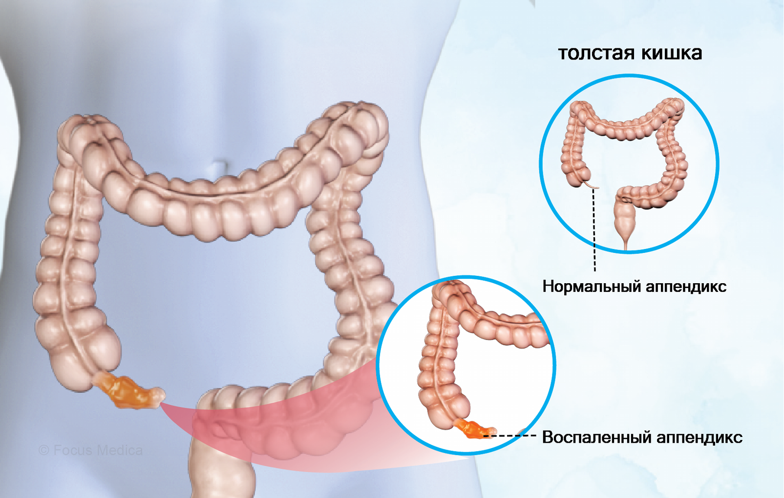

Аппендицит
Это воспаление червеобразного отростка (аппендикса) слепой кишки. Аппендикс – это полый орган длиной 7-11 см, который отходит от купола слепой кишки. Воспаление червеобразного отростка может носить острый или хронический характер. Поэтому в медицине выделяют острый и хронический аппендицит. В настоящее время хронический аппендицит встречается крайне редко. Такой диагноз ставят больным, перенесшим приступ острого аппендицита, у которых червеобразный отросток удалить невозможно из-за развития осложнений.
Воспаление червеобразного отростка чаще диагностируют у женщин в возрасте от 20 до 40 лет. Заболеваемость мужчин того же возраста в два раза ниже. В возрасте от 12 до 20 лет чаще болеют мальчики и юноши.
Симптомы
Аппендицит проявляется болями в области живота, высокой температурой, тошнотой, рвотой, расстройством дефекации (понос или запор).
Приступ аппендицита часто возникает поздно ночью или в утренние часы. При классическом течении заболевания первым его признаком будет боль. Поначалу она возникает под ложечкой, вокруг пупка или по всему животу. Она имеет нечеткий, распирающий, тянущий характер. Через 3-4 часа боль смещается в правую подвздошную область, где и остается. Теперь она становится постоянной, более сильной, увеличивается при ходьбе, в положении лежа на левом боку.
Через пару часов после появления боли возникают тошнота, а также необильная, часто однократная, не приносящая облегчения рвота. Возможно кишечное расстройство: запор или, наоборот, жидкий стул.
Через 2-4 часа после возникновения боли появляется лихорадка. Чем выше температура, тем более выражено воспаление.
Лечение
Общепринятой тактикой при остром аппендиците является как можно более раннее хирургическое удаление воспаленного червеобразного отростка.
На этапе догоспитальной помощи при подозрении на острый аппендицит показаны постельный режим, исключение приема жидкости и пищи, прикладывание холода к правой подвздошной области. Категорически воспрещается прием слабительных препаратов, использование грелки, введение анальгетиков до окончательного установления диагноза.
При остром аппендиците выполняется аппендэктомия – удаление червеобразного отростка через открытый разрез в правой подвздошной области или путем лапароскопии. При аппендиците, осложненном разлитым перитонитом, производится срединная лапаротомия для обеспечения тщательной ревизии, санации и дренирования брюшной полости. В постоперационном периоде проводится антибиотикотерапия.
В случае хронического аппендицита аппендэктомия показана, если отмечается упорный болевой синдром, лишающий больного нормальной активности. При относительно легкой симптоматике может быть применена консервативная тактика, включающая устранение запоров, прием спазмолитических препаратов, физиотерапию.